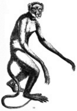
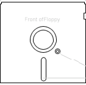

LBSC 690 • A Dictionary of Terms1A dictionary of terms \dik-shə-ner-ē\ [a glossary] (2005) : a final project created by Lisa Conathan, Elisabeth Cohen and Cory Bernat : for lbsc 690: fall 2005  browse terms alphabetically the complete list contains 330 terms and defenitions : Definitions in this glossary come from the course textbook Discovering Computers A Gateway to Information and Professor J. Lin's lecture handouts, slides, and links view terms by topic through the magic of XML, the glossary terms can be viewed by specific topics : choose any of the following (1):Building and Deploying Systems (2): Computers and Networks (3):Databases and Information Retrieval (4):Interacting with Users (5):The Internet (6):Multimedia (7):Privacy and Security (8):Programming (9):Storage Media (10):Structured Documents and XML take a *fun* quiz! by taking the quiz you can (1) a: test your knowledge b: see how much you've learned from this course (2): admire the multiple choice form and how expertly it functions (3): study for the final exam (4): share in the delightful surprises in store for all test-takers  in•for•ma•tion \in-fәr-'ma-shәn\ n 1 : the communication or reception of knowledge or intelligence 2 a (1): knowldege obtained from investigation, study or instruction, esp. from lbsc 690, fall 2005 (2): intelligence, news (3): facts, data b: the attribute inherent in and communicated by one of two or more alternative sequences or arrangements of something (as in binary digits in a computer program) that produce specific effects c: a signal or character (as in a computer) representing data
tech•nol•o•gy; \tek-'näl-ә-jē\ n, pl -gies [Gk technologia systematic treatment of an art, fr. techno- + logis -logy] (1968) 1: technical language 2 a: applied science b: a scientific method of achieving a practical purpose 3: the totality of the means employed to develop an
interactive, online, XML-powered dictionary of terms 4: more about this project
\ə\abut \ə\kitten \ər\further \a\ash \ā\ace \ä\cot,cart \au\out \ch\chin \e\bet \ē\easy \g\go \i\hit \i\ice \j\job \ŋ\sing \o\go \o\law \oi\boy \th\thin \th\the \ü\loot \u\foot \y\yet \zh\vision |